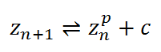
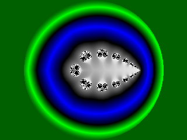
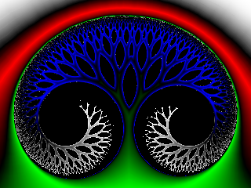
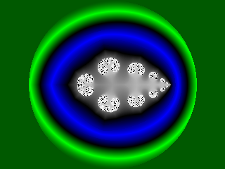
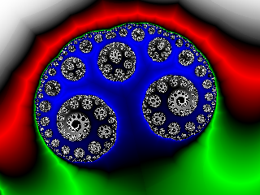

Fractaaltype: Glynn
Vergelijking:

De resulterende Julia sets werden gemaakt met machten p in [1,2] en c waarden dicht buiten de westelijke grens.
Interessante waarden voor de Julia c parameter zijn -0.2 + 0i voor p gelijk aan 1.5, en
-0.375 + 0i, -0.338 + 0i, 0.22 + 0i voor p gelijk aan 1.75
Standaard ontsnappingsstraal: 2.0
Standaard macht: 1.5
Voorbeelden:
Duale fractaal (p = 1.5; c = -0.2 + 0.0 i)

Duale fractaal (p = 1.5; c = -0.2 + 0.0 i) (detail)

Duale fractaal (p = 1.75; c = -0.375 + 0.0 i)

Duale fractaal (p = 1.75; c = -0.375 + 0.0 i) (detail)

XHTML 1.1 Transitional | CSS2 | Creative Commons License
Sven Maerivoet (www)